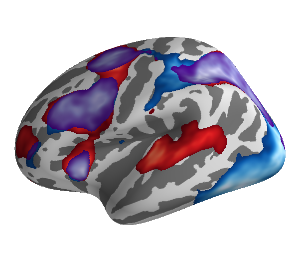

Display a Conjunction Map¶
Show the overlap between two different activation maps.
This is one of the most commonly asked questions about Tksurfer on the Freesurfer mailing list. Below, we show how it can be accomplished in just a few lines of code with PySurfer.
Python source code: plot_fmri_conjunction.py
import os.path as op
import numpy as np
from surfer import io
from surfer import Brain
print(__doc__)
"""
Initialize the visualization.
"""
brain = Brain("fsaverage", "lh", "inflated", background="white")
"""
Read both of the activation maps in using
surfer's io functions.
"""
sig1 = io.read_scalar_data(op.join('example_data', "lh.sig.nii.gz"))
sig2 = io.read_scalar_data(op.join('example_data', "lh.alt_sig.nii.gz"))
"""
Zero out the vertices that do not meet a threshold.
"""
thresh = 4
sig1[sig1 < thresh] = 0
sig2[sig2 < thresh] = 0
"""
A conjunction is defined as the minimum significance
value between the two maps at each vertex.
"""
conjunct = np.min(np.vstack((sig1, sig2)), axis=0)
"""
Now load the numpy array as an overlay.
Use a high saturation point so that the
blob will largely be colored with lower
values from the lookup table.
"""
brain.add_overlay(sig1, 4, 30, name="sig1")
"""
A pointer to the overlay's color manager
gets stored in the overlays dictionary.
Change the lookup table to "Reds" and turn the
color bar itself off, as otherwise the bars
for the three maps will get confusingly stacked.
"""
brain.overlays["sig1"].pos_bar.lut_mode = "Reds"
brain.overlays["sig1"].pos_bar.visible = False
"""
Now load the other two maps and again change
the lookup table and turn off the color bar itself.
"""
brain.add_overlay(sig2, 4, 30, name="sig2")
brain.overlays["sig2"].pos_bar.lut_mode = "Blues"
brain.overlays["sig2"].pos_bar.visible = False
"""
Display the overlap as purple, which is what you
get when you mix red and blue.
"""
brain.add_overlay(conjunct, 4, 30, name="conjunct")
brain.overlays["conjunct"].pos_bar.lut_mode = "Purples"
brain.overlays["conjunct"].pos_bar.visible = False